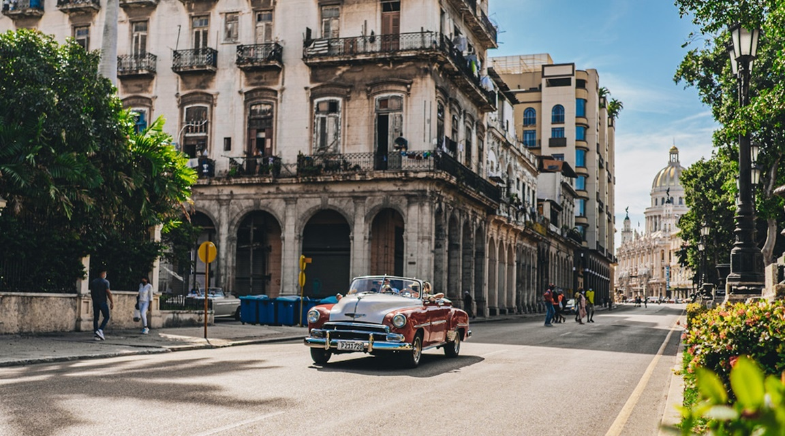

01 Día completo
Full Day
Para quienes quieren aprovechar el día y descubrir más lugares sin prisas.
Experiencias sugeridas
- Jornada de playa en Varadero.
- Recorridos culturales por La Habana.
- Excursiones combinadas con naturaleza y gastronomía.